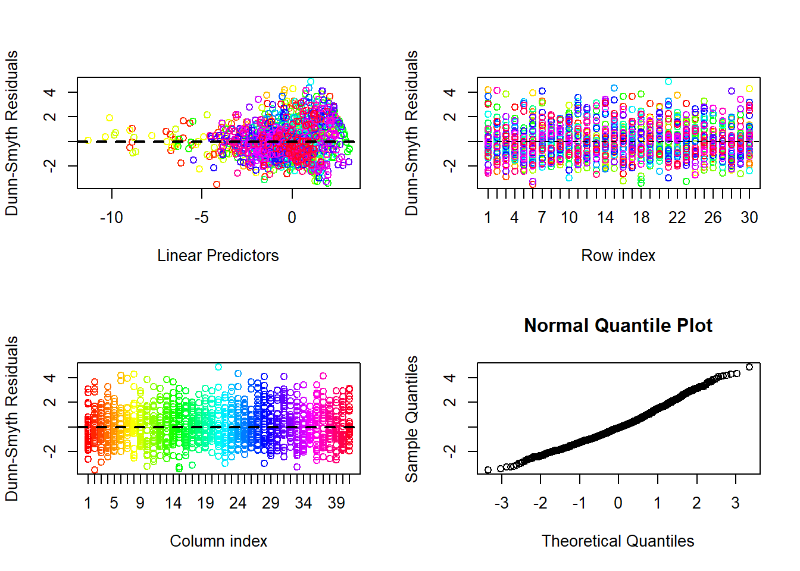
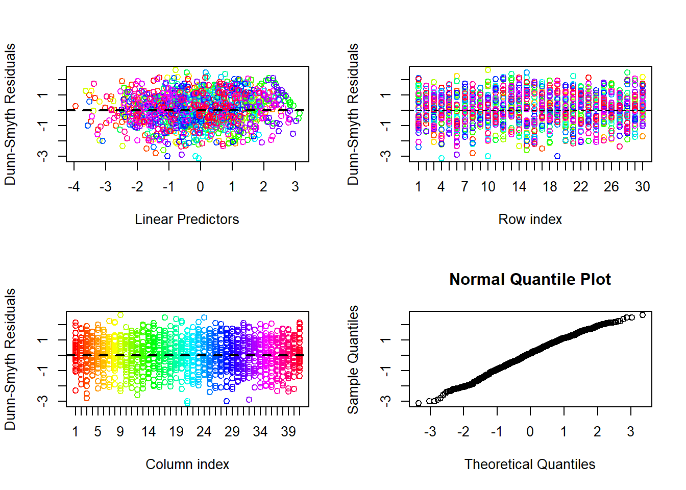
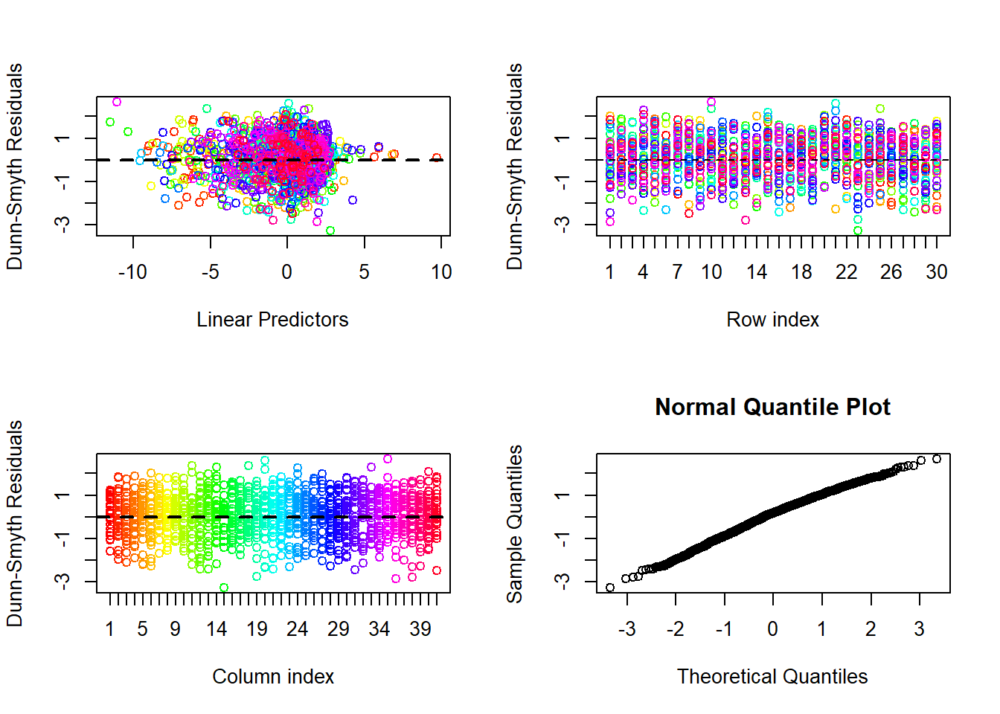

{kind=link}
 We can also display the residual correlation before and after accounting for environmental variables. To make the plot easier to understand. We drop all taxa that don’t have any correlations.
We can also display the residual correlation before and after accounting for environmental variables. To make the plot easier to understand. We drop all taxa that don’t have any correlations.In this post we will analyze the antTraits data with generalized linear latent variable models fit with the BORAL R package (Hui 2016). Elsewhere on the blog you can find an analysis of the same data using mvabund and gllvm.
First of we will setup the analysis by loading the required libraries. If you haven’t already done so, you will need to install the pacman R package before running this code.
pacman::p_load(boral,
corrplot,
dplyr,
ggplot2,
mvabund,
readxl,
rjags,
UncertainOrd)##
## Attache Paket: 'kableExtra'## The following object is masked from 'package:dplyr':
##
## group_rowsThe antTraits data set we will analyze here is included mvabund and gllvm so we can load it using the data() function.
data(antTraits)
Y <- antTraits$abund
# scale environmental variables
X <- scale(antTraits$env)
TR = antTraits$traitsFirst we fit the one of simplest model conceivable with BORAL. It is fit with count data so we use a Poisson. From other analyses, using mvabund and gllvm, we know that negative binomial distribution is likely better suited for these data. Nonetheless, we will start out with a Poisson distribution to see if we also see a fan-shaped pattern in the residuals. The model is unconstrained so we do not need the environmental data (X) or the traits (TR) yet. Further, we specify the number of latent variables (2) using the num.lv option in the lv.control argument. The row effect (row.eff) accounts for differences in total site abundance (Hui et al. 2015). Another possibility is to fit a model with a random row effect drawn from a normal distribution with mean zero and unknown standard deviation. As n is rather small in this study we stick with the fixed row effects. Lastly, we set save.model to TRUE. This will enable us to add uncertainty estimates later.
fit_uc_po = boral(
y = Y,
family = "poisson",
lv.control = list(num.lv = 2),
row.eff = "fixed",
save.model = T
)Let’s have a look at the summary of this model. First we get the call we used to construct the model. The second element is a matrix with the coefficients. beta0 us the species specific intercept, theta1 and theta2 are the species-specific coefficient of the latent variables (${0j},{j1},_{j2} $ in Hui (2016))
| beta0 | theta1 | theta2 | |
|---|---|---|---|
| Amblyopone.australis | -0.81 | 0.495 | 0.000 |
| Aphaenogaster.longiceps | -2.87 | 4.169 | 4.438 |
Next we get the site scores (lvs) and row effects (row.coefficients). The element est shows which method was used to get parameter point estimates from the posterior distribution. Calc.ics returns various information criteria that can be used for model selection, but only if the calc.ics argument was set to TRUE in the model call. Note that this function was is no longer updated and we did not use it here. If you followed the script verbatim until here this element will simply contain FALSE. The next column contains the trail.size which is only relevant for binomially distributed data. Num.ord.levels are the levels of an ordinal model. Lastly, prior.control contains options that were used to specify the priors. Since we didn’t use any this only returns ssvs.index which is -1. ssvs refers to stochastic search variable selection which is a way to use spike and slab priors for the environmental variable coefficients. Spike and slab priors are neat method for variable selection in Bayesian statistics. They simply concentrate much of the probability mass (density) of the prior distribution at zero (the spike). This way the coefficient estimates are biased toward zero and a zero coefficient is practically the same as excluding a variable. -1 shows that we did not use ssvs. To use svss prior.control = list(ssvs.index = 1). It is also possible to use ssvs for a subset of variables. To do that you have to provide ssvs.index with vector that has as many elements as there are environmental variables. For example, c(1,-1,1,1,-1) if you wanted to use ssvs for the first, third and fourth variable but not the second or the fifth.
Let’s turn to the residual plots
par(mfrow=c(2,2))
plot(fit_uc_po)## NULL
As we expected, the first plot is strongly fan-shaped (residual variance increase with linear predictor), so we can go ahead and fit a negative binomial model. Except for the family argument non of the argument changed from the first call.
fit_uc_nb <- boral(
y = Y,
family = "negative.binomial",
lv.control = list(num.lv = 2),
row.eff = "fixed",
save.model = T
)par(mfrow=c(2,2))
plot(fit_uc_nb)## NULL
The fan-shape is gone, and we see a slight underdispersion as we did with mvabund and gllvm. This might be due to the fact that the data are rather zero-inflated than overdispersed but BORAL can not fit such models. It might be possible to construct hurdle models as is suggested for HMSC (Ovaskainen and Abrego 2020). Hurdle models consist of two models, a binary one modeling the occurrence probability and a count model modeling the abundance conditional on presence. However, I will not pursue this approach further here.
Next, we crate a biplot. The black numbers are the sites, located at theirs respective site scores. Species names are added in red to show their optima. If we were to add all species names the plot would become illegible. So instead we focus on the four species (ind.spp) with the largest latent variable coefficients.
lvsplot(fit_uc_nb,
biplot = T,
ind.spp = 4)## Only the first 4 ``most important'' latent variable coefficients included in biplot.When we compare this ordination diagram to that obtained with gllvms we can see that the site scores are similar. The sites 16 to 20 are a group in the upper left corner that is associated with high abundances of Aphaenogaster longiceps (though site 19 falls out of the group in BORAL) and the sites 12,13 and 15 form a group in the upper right corner. The arrangement of sites between these two groups differs.
Hoegh and Roberts (2020) proposed a way to visualize uncertainty in site scores. Basically we sample each latent variable coefficient from its own empirical posterior distribution. We can extract the posterior from our BORAL model with get.mcmcsamples() because we set save.model to TRUE. The resulting object is large (1000 x 255). Each row is one MCMC sample and each column gives another parameter or statistic of that sample. The first column is the deviance than come species-specific parameters (intercept, latent variable coefficients, dispersion) for each species x parameter combination (lv.coefs[species, parameter]). Next we find what we are looking for here the estimates of the site scores (lvs[site, latent variable]). Last are the estimates of the row coefficients.
Depending on the number of parameters and sites there can be a lot of columns, like in our case. So we create an indices to select the relevant columns based on their names (s1c and s2c) and subset the samples with them. Now we have the data we need to display uncertainy ordinations using the CredibleViz() function. With the type argument we select how to display the uncertainty and with items which sites to display it for. The object returned by CredibleViz() is a ggplot so we can further modify it to our liking.
samples = get.mcmcsamples(fit_uc_nb)
s1c = grepl(x = colnames(samples), pattern = "lvs+.+\\d,1")
s2c = grepl(x = colnames(samples), pattern = "lvs+.+\\d,2")
samples1 <- samples[, s1c]
samples2 <- samples[, s2c]
options(warn = -1)
cv = CredibleViz(
coord1 = samples1,
coord2 = samples2,
type = "density",
items = c(19)
)
cv$plot.obj +
xlim(-1.3,1.3) +
ylim(-1.3,1.3)Here we can see two interesting features. First the 95% Highest posterior density (HPD) interval includes almost half of the ordination space, including an “outlying island”. This is likely due to the low number of observation we have. A decreasing HPD width with increasing sample size was shown by Hoegh and Roberts (2020) for simulated data. Second, the highest density area is different from the shown point estimate for site 19. This is because the default estimate from BORAL is the posterior median not the posterior mean or mode. Both of which would likely be closer to highest density area.
Ok enough for the unconstrained models. In the code below we fit a constrained model with the environmental variables in X. Note that we do not have to specify a formula, but can select variables from X to with the X.ind argument.
fit_co_nb <-
boral(
y = Y,
X = X,
family = "negative.binomial",
lv.control = list(num.lv = 2),
save.model = TRUE
)Residual plots look good.
par(mfrow=c(2,2))
plot(fit_co_nb)## NULL
The structure of the biplot is now completely different. Now we are only looking at what is not explained by environmental variables. So sites that were close to each other in the first biplot are similar in species composition but this might be due to similar environmental variables. In the second biplot the effect of environmental variables on the abundances is partialed out. We are only looking the residuals.
lvsplot(fit_co_nb,
biplot = T,
ind.spp = 4)
We can also display the residual correlation before and after accounting for environmental variables. To make the plot easier to understand. We drop all taxa that don’t have any correlations.
envcors <- get.enviro.cor(fit_co_nb)
rescors <- get.residual.cor(fit_co_nb)
par(xpd=TRUE)
drop_id = which(colSums(envcors$sig.cor) == 1)
corrplot(
envcors$sig.cor[-drop_id,-drop_id],
type = "lower",
diag = FALSE,
title = "Correlations due to covariates",
mar = c(3,0.5,5,1),
tl.srt = 45,
tl.cex = .8,
tl.pos = "ld",
method = "square",
order = "AOE"
)drop_id = which(colSums(rescors$sig.cor) == 1)
corrplot(
rescors$sig.cor[-drop_id, -drop_id],
type = "lower",
diag = FALSE,
title = "Residual correlations",
mar = c(3, 0.5, 5, 1),
tl.srt = 45,
tl.cex = .8,
tl.pos = "ld",
method = "square",
order = "AOE"
)To round this analysis up, we will also have a look at which traits and how they might mediate the responses of species to the environment. BORAL can not work with non-numeric traits so we will have to remove Pilosity (ordinal variable) and Polymorphism (binary variable).
# Non-numeric variables have to be removed
TR2 = TR[,-c(3,4)]
example_which_traits <- vector("list",ncol(X)+1)
for(i in 1:length(example_which_traits))
example_which_traits[[i]] <- 1:ncol(TR2)
fit_co_nb_tr <-
boral(
y = Y,
X = X,
traits = TR2,
which.traits = example_which_traits,
family = "negative.binomial",
lv.control = list(num.lv = 2),
save.model = TRUE
)We can also use corrplots to which traits might modify the response to which environmental variable. Remember that traits are included as means for the prior distributions of coefficients. Without traits or further specifying priors the priors for \(\beta\) are normal with mean 0 and standard deviation 10. If we include traits the priors become \(\theta_{0j} \sim N(t_j^T\kappa_0, \sigma^2_0)\) and \(\beta_{jk} \sim N(t_j^T\kappa_k, \sigma^2_k)\) where \(t_k\) is a vector of traits for species k. The kappas can be though of as regression coefficients in the regression between traits and \(\beta\) parameters. These kappas (or their means to be precise) are shown in the corrplot below. We see that the strongest relation is between Femur length and the species-specific intercept. Species that have longer femurs apparently tend to be more abundant irrespective of environmental factors. The strongest negative relation is between femur length and canopy cover. This shows that abundance of species with longer femurs tends to decrease stronger the higher the canopy cover is.
corrplot(fit_co_nb_tr$traits.coefs.mean,
is.corr = FALSE,
method = "color")
Hoegh, Andrew, and David W. Roberts. 2020. “Evaluating and presenting uncertainty in model-based unconstrained ordination.” Ecology and Evolution 10 (1): 59–69. https://doi.org/10.1002/ece3.5752.
Hui, Francis K. C. 2016. “BORAL– Bayesian Ordination and Regression Analysis of Multivariate Abundance Data in R.” Methods in Ecology and Evolution 7 (6): 744–50. https://doi.org/10.1111/2041-210X.12514.
Hui, Francis K. C., Sara Taskinen, Shirley Pledger, Scott D. Foster, and David I. Warton. 2015. “Model-based approaches to unconstrained ordination.” Methods in Ecology and Evolution 6 (4): 399–411. https://doi.org/10.1111/2041-210X.12236.
Ovaskainen, Otso, and Nerea Abrego. 2020. Joint Species Distribution Modelling: With Applications in R. Cambridge University Press.